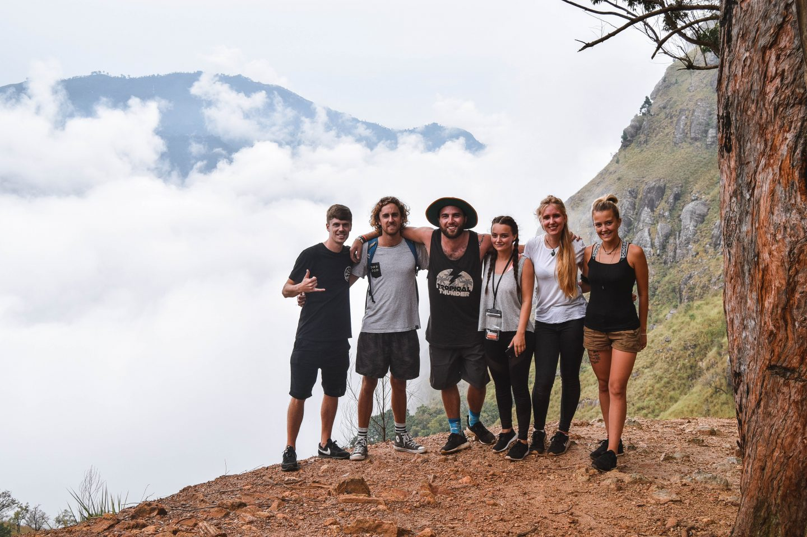
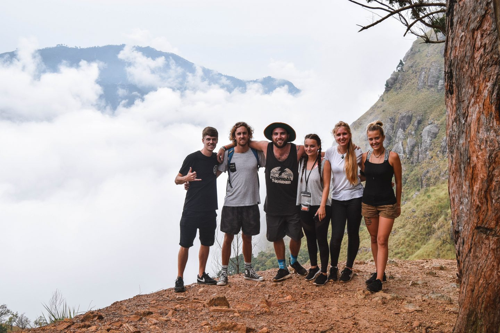

Things To Do in Sri Lanka
Safari
In Sri Lanka elephants can be found in Udawalawa National Park, Yala National Park, Lunugamvehera National Park and Minneriya National Park and also in outside protected areas.
Sri Lanka has the highest density of elephants in Sri Lanka. Jeep safari in Yala National Park is one of the best ways to watch elephants in Sri Lanka.
More Details on Yala Safari:
Price: $80-$200
Durartion: 4 Hours
Read More
Whale watching
Whale watching is one of the fastest growing tourism industries in Sri Lanka. Tourists show the most intrest in whatching blue whales which is available in Sri Lanka between December and July in more than two different locations. Mirissa is one of the famous places for Blue whale watching Other whatles and dolphins can be seen during the tours.
More Details on Whale Watching:
Price: $100-$200
Durartion: 4 Hours
Read More
Hiking
 

Hiking is Sri Lanka is one of the best experiences that any person can have regardless if you are a traveller. You will find yourself green forests, huge mountains, breathtaking rivers and waterfalls. Following are some of the very few places you can visit for hiking in your tour to Sri Lanka.
More Details on Hiking:
Price: $50
Durartion: 4-6 Hours
Read More